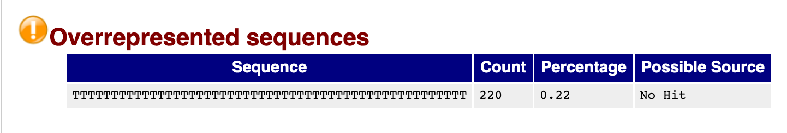

RNA-seq Data
Analysis of RNA-seq requires the use of many types of data. The three
most common that we will encounter are:
- Sequence data
- Genome feature data
- Alignment data
We will introduce each data type and their formats in more detail as
they enter the workflow, but for now some general notes about the
formats we will encounter:
- File formats represent the data in a structured manner.
- Some file formats are not human-readable; they are binary, and we
will see what that means when we discuss alignments.
- Many file formats are human readable, but very large. These
files should not be viewed in Word or Excel.
FASTQ Files
Raw sequenced reads are stored in FASTQ format. This
is a plain text, human readable file format that stores information
about each read. For a single read there are four lines:
@A00437:266:HVFMYDSXX:1:1101:1181:1000 1:N:0:AGCCTATC+TGCGTAAC
TTTATTGTTGATGGTTATTTTTTGTTTATGGTTATTTTGTGTTTATGGTTATTTTTTGTTTATGGTTATTTTTTA
+
FFFFFFFFFFFFFFFFFFFFFFFFFFFFFFFFFFFFFFFFFFFFFFFFFFFFFFFFFFFFFFFFFFFFFFFFFFF
| 1 |
Begins with @ and has information about the read. From
AGC will contain flowcell and barcode information. |
| 2 |
The RNA sequence. |
| 3 |
Always begins with + and may contain the same
information as line 1. |
| 4 |
A string of characters representing the quality scores. Always the
same number of characters as line 2. |
Base Quality
Scores
The fourth line encodes the quality of each nucleotide in the read.
The most common encoding is referred to as PHRED-33, and the following
maps characters to qualities:
Quality encoding: !"#$%&'()*+,-./0123456789:;<=>?@ABCDEFGHI
| | | | |
Quality score: 0........10........20........30........40
The above example is a rather boring read with all bases having
F, meaning a score of 37, which is good. Each quality score
represents the probability that the corresponding nucleotide call is
incorrect. The quality score is logarithmic and is calculated as:
Q = -10 x log10(P), where P is the probability that the base call is erroneous
Another way to interpret the scores is in terms of the following
table:
| 10 |
1 in 10 |
90% |
| 20 |
1 in 100 |
99% |
| 30 |
1 in 1000 |
99.9% |
| 40 |
1 in 10000 |
99.99% |
It would clearly be painstaking to go through all the base quality
scores of all the millions of reads obtained from a sequencing run, so
we typically don’t evaluate the FASTQ files by sight. Instead, we use
tools that take in FASTQ files and summarize the base quality scores
(and other characteristics) to determine the overall quality of the
reads from the sequencer.
Quality Assessment with
FastQC
The first step in many high-throughput sequencing analyses is to
examine the quality of the raw reads with FastQC.
It analyzes various aspects of each FASTQ file and provides a quick
impression of the overall quality metrics which are useful to determine
before proceeding with downstream analysis. The following modules are
present in an easy to read HTML report.
- Read quality score per base (by interpreting the PHRED33
scores)
- Per tile sequencing quality (related to sequencing clusters on the
flowcell)
- Read lengths
- GC content
- Adapter content
- Overrepresented sequences
Toward the end of this module, we’ll run FastQC. For now, we’ll
discuss the output files it produces and view some examples.
FastQC output
files
FastQC outputs an HTML report and a zipped archive of intermediate
files. These will appear like this:
SRR7777895_R1.trimmed_fastqc.html
SRR7777895_R1.trimmed_fastqc.zip
For most situations, opening the HTML report and inspecting the
results will provide the information necessary to make decisions about
your data.
First we’ll take a look at some of the figures found in a typical
FastQC report, then we’ll view an example of an HTML report and try to
make interpretations from this. Finally, we’ll run FastQC to produce
some of these files from our example dataset.
Interpreting
FastQC
FastQC reports are organized around the the different modules
characterizing different aspects of the reads. The FastQC help
page has detailed descriptions for each module.
The report summary is a PASS, WARN, FAIL overview of the modules.
It’s important to not take them too seriously in all cases as there are
a number of assumptions that go into the thresholds that may not apply
in your particular experiment.
An important note: For computational reasons, FastQC only evaluates
the first 100,000 reads in a FASTQ file. The assumption is that the
first 100,000 reads sufficiently represent the full library.
Per base sequence
quality
A per base boxplot of the quality scores with helpful coloring for
good, fair, and poor qualities. If a sample has quality scores that
degrade at the 3’ end of a read (as in the second example below), the
sample doesn’t necessarily have to be dropped. Some aligners, e.g. STAR,
will automatically trim poor quality read ends.

An example of a good quality run.

An example of a poor quality run.
Sequence
Duplication
High sequence duplication, indicated by a skew to the right of the
blue curve in the plots below, can be caused by low complexity
libraries, too many cycles of PCR amplification, or too little starting
material.
On the other hand, if the library was prepared with an enrichment
step (e.g. ChIP-seq), then sequence duplication might not be
unexpected.

An example of a sample with low sequence duplication levels.

An example of a sample with high sequence duplication levels.
Overrepresented
sequences
Overrepresented sequences are those making up more than 0.1% of the
total (of the 100,000 reads sampled). Finding an overrepresented
sequence is an indication of something biologically meaningful (e.g. an
enrichment step in the library prep process), or it is an issue stemming
from the library preparation process (e.g. adapters, a failure to fully
remove polyA tails, or contamination).

We see that there is a high number of reads with polyA tails. This
could be a result of an inefficient removal of polyA tails.
Adapter
Content
Adapter sequence typically is not present in standard RNA-seq
libraries. However, if the fragment sizes resulting from library prep
are smaller than the read length on the sequencer, then it is possible
to get “read-through” of the adapter.
This can be dealt with by adding a step to the workflow that trims
the reads of adapter content with a tool such as cutadapt. We will
see this in a later module.
Examining a FastQC
report
From the zipped folder you downloaded earlier, find the FastQC report
SRR7777895_R1.trimmed_fastqc.html.
We’ll view this report and try to interpret some of the figures.
Acting on QC - Good
or Bad Results?
Good QC on raw reads means that RNA quality, library preparation, and
sequencing seem fine to proceed with the next steps of analysis. It
does not mean that you will find differentially
expressed genes downstream.
The source of bad QC measures are not always easy to determine, and
doesn’t necessarily mean the data cannot be used downstream. However,
bad QC measures may indicate that hazards lie ahead, and that certain
steps upstream of sequencing (sample handling, RNA extraction, library
preparation) might need to be altered.
FastQC Exercise
Let’s try running FastQC on our FASTQ input files.
- Navigate to
analysis directory
- View FastQC help file
- Construct the call to FastQC
- Watch FastQC process the files / gather quality metrics
- View the output of FastQC (the filenames)
# Navigate to analysis directory
cd ~/RSD_Shell/analysis
# View the FastQC help file
fastqc -h
# Make a directory for our output
mkdir out_fastqc
# Contstruct the call to FastQC
fastqc -o out_fastqc/ ../reads/*.fastq.gz
# Watch the output of FastQC
# View the output of FastQC (the filenames)
These materials have been adapted and extended from materials created
by the Harvard Chan
Bioinformatics Core (HBC). These are open access materials
distributed under the terms of the Creative Commons
Attribution license (CC BY 4.0), which permits unrestricted use,
distribution, and reproduction in any medium, provided the original
author and source are credited.
LS0tCnRpdGxlOiAiRGF5IDEgLSBNb2R1bGUgMDI6IFFDIgphdXRob3I6ICJVTSBCaW9pbmZvcm1hdGljcyBDb3JlIgpvdXRwdXQ6CiAgICAgICAgaHRtbF9kb2N1bWVudDoKICAgICAgICAgICAgaW5jbHVkZXM6CiAgICAgICAgICAgICAgICBpbl9oZWFkZXI6IGhlYWRlci5odG1sCiAgICAgICAgICAgIHRoZW1lOiBwYXBlcgogICAgICAgICAgICB0b2M6IHRydWUKICAgICAgICAgICAgdG9jX2RlcHRoOiA0CiAgICAgICAgICAgIHRvY19mbG9hdDogdHJ1ZQogICAgICAgICAgICBudW1iZXJfc2VjdGlvbnM6IHRydWUKICAgICAgICAgICAgZmlnX2NhcHRpb246IHRydWUKICAgICAgICAgICAgbWFya2Rvd246IEdGTQogICAgICAgICAgICBjb2RlX2Rvd25sb2FkOiB0cnVlCi0tLQo8c3R5bGUgdHlwZT0idGV4dC9jc3MiPgpib2R5eyAvKiBOb3JtYWwgICovCiAgICAgIGZvbnQtc2l6ZTogMTRwdDsKICB9CnByZSB7CiAgZm9udC1zaXplOiAxMnB0Cn0KPC9zdHlsZT4KCiMgUUMKCkluIHRoaXMgUXVhbGl0eSBDb250cm9sIChRQykgbW9kdWxlLCB3ZSB3aWxsIGxlYXJuOgoKKiB3aGF0IGEgRkFTVFEgZmlsZSBpcwoqIGhvdyB0byB1c2UgRmFzdFFDIHRvIGFzc2VzcyB0aGUgcXVhbGl0eSBvZiBzZXF1ZW5jaW5nIHJlYWRzCiogaG93IHRvIGludGVycHJldCBGYXN0UUMgcmVwb3J0cwoKIyBEaWZmZXJlbnRpYWwgRXhwcmVzc2lvbiBXb3JrZmxvdwoKQW4gb3ZlcnZpZXcgb2YgdGhlIHN0ZXBzIG9mIGVudGlyZSBkaWZmZXJlbnRpYWwgZXhwcmVzc2lvbiBleHBlcmltZW50IGFuZCBhbmFseXNpcyB3b3JrZmxvdyBpcyBzaG93biBiZWxvdy4gSW4gdGhpcyBsZXNzb24sIHdlIHdpbGwgZ28gb3ZlciB0aGUgaGlnaGxpZ2h0ZWQgcGFydCBvZiB0aGUgd29ya2Zsb3cuCgohW10oaW1hZ2VzL3dheWZpbmRlci93YXlmaW5kZXItMDIucG5nKQo8YnI+Cjxicj4KPGJyPgo8YnI+CgojIFJOQS1zZXEgRGF0YQoKQW5hbHlzaXMgb2YgUk5BLXNlcSByZXF1aXJlcyB0aGUgdXNlIG9mIG1hbnkgdHlwZXMgb2YgZGF0YS4gVGhlIHRocmVlIG1vc3QgY29tbW9uIHRoYXQgd2Ugd2lsbCBlbmNvdW50ZXIgYXJlOgoKLSBTZXF1ZW5jZSBkYXRhCi0gR2Vub21lIGZlYXR1cmUgZGF0YQotIEFsaWdubWVudCBkYXRhCgpXZSB3aWxsIGludHJvZHVjZSBlYWNoIGRhdGEgdHlwZSBhbmQgdGhlaXIgZm9ybWF0cyBpbiBtb3JlIGRldGFpbCBhcyB0aGV5IGVudGVyIHRoZSB3b3JrZmxvdywgYnV0IGZvciBub3cgc29tZSBnZW5lcmFsIG5vdGVzIGFib3V0IHRoZSBmb3JtYXRzIHdlIHdpbGwgZW5jb3VudGVyOgoKLSBGaWxlIGZvcm1hdHMgcmVwcmVzZW50IHRoZSBkYXRhIGluIGEgc3RydWN0dXJlZCBtYW5uZXIuCi0gU29tZSBmaWxlIGZvcm1hdHMgYXJlIG5vdCBodW1hbi1yZWFkYWJsZTsgdGhleSBhcmUgYmluYXJ5LCBhbmQgd2Ugd2lsbCBzZWUgd2hhdCB0aGF0IG1lYW5zIHdoZW4gd2UgZGlzY3VzcyBhbGlnbm1lbnRzLgotIE1hbnkgZmlsZSBmb3JtYXRzIGFyZSBodW1hbiByZWFkYWJsZSwgYnV0IHZlcnkgbGFyZ2UuICoqVGhlc2UgZmlsZXMgc2hvdWxkIG5vdCBiZSB2aWV3ZWQgaW4gV29yZCBvciBFeGNlbC4qKgoKIyMgRkFTVFEgRmlsZXMKClJhdyBzZXF1ZW5jZWQgcmVhZHMgYXJlIHN0b3JlZCBpbiBbRkFTVFFdKGh0dHBzOi8vZW4ud2lraXBlZGlhLm9yZy93aWtpL0ZBU1RRX2Zvcm1hdCkgZm9ybWF0LiBUaGlzIGlzIGEgcGxhaW4gdGV4dCwgaHVtYW4gcmVhZGFibGUgZmlsZSBmb3JtYXQgdGhhdCBzdG9yZXMgaW5mb3JtYXRpb24gYWJvdXQgZWFjaCByZWFkLiBGb3IgYSBzaW5nbGUgcmVhZCB0aGVyZSBhcmUgZm91ciBsaW5lczoKCgogICAgQEEwMDQzNzoyNjY6SFZGTVlEU1hYOjE6MTEwMToxMTgxOjEwMDAgMTpOOjA6QUdDQ1RBVEMrVEdDR1RBQUMKICAgIFRUVEFUVEdUVEdBVEdHVFRBVFRUVFRUR1RUVEFUR0dUVEFUVFRUR1RHVFRUQVRHR1RUQVRUVFRUVEdUVFRBVEdHVFRBVFRUVFRUQQogICAgKwogICAgRkZGRkZGRkZGRkZGRkZGRkZGRkZGRkZGRkZGRkZGRkZGRkZGRkZGRkZGRkZGRkZGRkZGRkZGRkZGRkZGRkZGRkZGRkZGRkZGRkZGCgoKfCBMaW5lIHwgRGVzY3JpcHRpb24gfAp8IDotLTogfCAtLS0tLS0tLS0tLSB8CnwgMSB8IEJlZ2lucyB3aXRoIGBAYCBhbmQgaGFzIGluZm9ybWF0aW9uIGFib3V0IHRoZSByZWFkLiBGcm9tIEFHQyB3aWxsIGNvbnRhaW4gZmxvd2NlbGwgYW5kIGJhcmNvZGUgaW5mb3JtYXRpb24uIHwKfCAyIHwgVGhlIFJOQSBzZXF1ZW5jZS4gfAp8IDMgfCBBbHdheXMgYmVnaW5zIHdpdGggYCtgIGFuZCBtYXkgY29udGFpbiB0aGUgc2FtZSBpbmZvcm1hdGlvbiBhcyBsaW5lIDEuIHwKfCA0IHwgQSBzdHJpbmcgb2YgY2hhcmFjdGVycyByZXByZXNlbnRpbmcgdGhlIHF1YWxpdHkgc2NvcmVzLiBBbHdheXMgdGhlIHNhbWUgbnVtYmVyIG9mIGNoYXJhY3RlcnMgYXMgbGluZSAyLiB8CgojIyMgQmFzZSBRdWFsaXR5IFNjb3JlcwoKVGhlIGZvdXJ0aCBsaW5lIGVuY29kZXMgdGhlIHF1YWxpdHkgb2YgZWFjaCBudWNsZW90aWRlIGluIHRoZSByZWFkLiBUaGUgbW9zdCBjb21tb24gZW5jb2RpbmcgaXMgcmVmZXJyZWQgdG8gYXMgUEhSRUQtMzMsIGFuZCB0aGUgZm9sbG93aW5nIG1hcHMgY2hhcmFjdGVycyB0byBxdWFsaXRpZXM6CgoKICAgIFF1YWxpdHkgZW5jb2Rpbmc6ICEiIyQlJicoKSorLC0uLzAxMjM0NTY3ODk6Ozw9Pj9AQUJDREVGR0hJCiAgICAgICAgICAgICAgICAgICAgICB8ICAgICAgICAgfCAgICAgICAgIHwgICAgICAgICB8ICAgICAgICAgfAogICAgICAgUXVhbGl0eSBzY29yZTogMC4uLi4uLi4uMTAuLi4uLi4uLjIwLi4uLi4uLi4zMC4uLi4uLi4uNDAKCgpUaGUgYWJvdmUgZXhhbXBsZSBpcyBhIHJhdGhlciBib3JpbmcgcmVhZCB3aXRoIGFsbCBiYXNlcyBoYXZpbmcgYEZgLCBtZWFuaW5nIGEgc2NvcmUgb2YgMzcsIHdoaWNoIGlzIGdvb2QuIEVhY2ggcXVhbGl0eSBzY29yZSByZXByZXNlbnRzIHRoZSBwcm9iYWJpbGl0eSB0aGF0IHRoZSBjb3JyZXNwb25kaW5nIG51Y2xlb3RpZGUgY2FsbCBpcyBpbmNvcnJlY3QuIFRoZSBxdWFsaXR5IHNjb3JlIGlzIGxvZ2FyaXRobWljIGFuZCBpcyBjYWxjdWxhdGVkIGFzOgoKCiAgICBRID0gLTEwIHggbG9nMTAoUCksIHdoZXJlIFAgaXMgdGhlIHByb2JhYmlsaXR5IHRoYXQgdGhlIGJhc2UgY2FsbCBpcyBlcnJvbmVvdXMKCgpBbm90aGVyIHdheSB0byBpbnRlcnByZXQgdGhlIHNjb3JlcyBpcyBpbiB0ZXJtcyBvZiB0aGUgZm9sbG93aW5nIHRhYmxlOgoKfCBQSFJFRCBRdWFsaXR5IFNjb3JlIHwgUHJvYmFiaWxpdHkgb2YgaW5jb3JyZWN0IGJhc2UgY2FsbCB8IEJhc2UgY2FsbCBhY2N1cmFjeSB8CnwgLS0tLS0tLS0tLS0tLS0tLS0tLSB8IC0tLS0tLS0tLS0tLS0tLS0tLS0tLS0tLS0tLS0tLS0tLS0gfCAtLS0tLS0tLS0tLS0tLS0tLS0gfAp8IDEwIHwgMSBpbiAxMCB8IDkwJSB8CnwgMjAgfCAxIGluIDEwMCB8IDk5JSB8CnwgMzAgfCAxIGluIDEwMDAgfCA5OS45JSB8CnwgNDAgfCAxIGluIDEwMDAwIHwgOTkuOTklIHwKCkl0IHdvdWxkIGNsZWFybHkgYmUgcGFpbnN0YWtpbmcgdG8gZ28gdGhyb3VnaCBhbGwgdGhlIGJhc2UgcXVhbGl0eSBzY29yZXMgb2YgYWxsIHRoZSBtaWxsaW9ucyBvZiByZWFkcyBvYnRhaW5lZCBmcm9tIGEgc2VxdWVuY2luZyBydW4sIHNvIHdlIHR5cGljYWxseSBkb24ndCBldmFsdWF0ZSB0aGUgRkFTVFEgZmlsZXMgYnkgc2lnaHQuIEluc3RlYWQsIHdlIHVzZSB0b29scyB0aGF0IHRha2UgaW4gRkFTVFEgZmlsZXMgYW5kIHN1bW1hcml6ZSB0aGUgYmFzZSBxdWFsaXR5IHNjb3JlcyAoYW5kIG90aGVyIGNoYXJhY3RlcmlzdGljcykgdG8gZGV0ZXJtaW5lIHRoZSBvdmVyYWxsIHF1YWxpdHkgb2YgdGhlIHJlYWRzIGZyb20gdGhlIHNlcXVlbmNlci4KCiMgUXVhbGl0eSBBc3Nlc3NtZW50IHdpdGggRmFzdFFDCgohW0Zhc3RRQ10oaW1hZ2VzL2Zhc3RxY19sb2dvLnBuZykKClRoZSBmaXJzdCBzdGVwIGluIG1hbnkgaGlnaC10aHJvdWdocHV0IHNlcXVlbmNpbmcgYW5hbHlzZXMgaXMgdG8gZXhhbWluZSB0aGUgcXVhbGl0eSBvZiB0aGUgcmF3IHJlYWRzIHdpdGggW0Zhc3RRQ10oaHR0cHM6Ly93d3cuYmlvaW5mb3JtYXRpY3MuYmFicmFoYW0uYWMudWsvcHJvamVjdHMvZmFzdHFjLykuIEl0IGFuYWx5emVzIHZhcmlvdXMgYXNwZWN0cyBvZiBlYWNoIEZBU1RRIGZpbGUgYW5kIHByb3ZpZGVzIGEgcXVpY2sgaW1wcmVzc2lvbiBvZiB0aGUgb3ZlcmFsbCBxdWFsaXR5IG1ldHJpY3Mgd2hpY2ggYXJlIHVzZWZ1bCB0byBkZXRlcm1pbmUgYmVmb3JlIHByb2NlZWRpbmcgd2l0aCBkb3duc3RyZWFtIGFuYWx5c2lzLiBUaGUgZm9sbG93aW5nIG1vZHVsZXMgYXJlIHByZXNlbnQgaW4gYW4gZWFzeSB0byByZWFkIEhUTUwgcmVwb3J0LgoKLSBSZWFkIHF1YWxpdHkgc2NvcmUgcGVyIGJhc2UgKGJ5IGludGVycHJldGluZyB0aGUgUEhSRUQzMyBzY29yZXMpCi0gUGVyIHRpbGUgc2VxdWVuY2luZyBxdWFsaXR5IChyZWxhdGVkIHRvIHNlcXVlbmNpbmcgY2x1c3RlcnMgb24gdGhlIGZsb3djZWxsKQotIFJlYWQgbGVuZ3RocwotIEdDIGNvbnRlbnQKLSBBZGFwdGVyIGNvbnRlbnQKLSBPdmVycmVwcmVzZW50ZWQgc2VxdWVuY2VzCgpUb3dhcmQgdGhlIGVuZCBvZiB0aGlzIG1vZHVsZSwgd2UnbGwgcnVuIEZhc3RRQy4gRm9yIG5vdywgd2UnbGwgZGlzY3VzcyB0aGUgb3V0cHV0IGZpbGVzIGl0IHByb2R1Y2VzIGFuZCB2aWV3IHNvbWUgZXhhbXBsZXMuCgojIyBGYXN0UUMgb3V0cHV0IGZpbGVzCgpGYXN0UUMgb3V0cHV0cyBhbiBIVE1MIHJlcG9ydCBhbmQgYSB6aXBwZWQgYXJjaGl2ZSBvZiBpbnRlcm1lZGlhdGUgZmlsZXMuIFRoZXNlIHdpbGwgYXBwZWFyIGxpa2UgdGhpczoKCiAgICBTUlI3Nzc3ODk1X1IxLnRyaW1tZWRfZmFzdHFjLmh0bWwKICAgIFNSUjc3Nzc4OTVfUjEudHJpbW1lZF9mYXN0cWMuemlwCgpGb3IgbW9zdCBzaXR1YXRpb25zLCBvcGVuaW5nIHRoZSBIVE1MIHJlcG9ydCBhbmQgaW5zcGVjdGluZyB0aGUgcmVzdWx0cyB3aWxsIHByb3ZpZGUgdGhlIGluZm9ybWF0aW9uIG5lY2Vzc2FyeSB0byBtYWtlIGRlY2lzaW9ucyBhYm91dCB5b3VyIGRhdGEuCgpGaXJzdCB3ZSdsbCB0YWtlIGEgbG9vayBhdCBzb21lIG9mIHRoZSBmaWd1cmVzIGZvdW5kIGluIGEgdHlwaWNhbCBGYXN0UUMgcmVwb3J0LCB0aGVuIHdlJ2xsIHZpZXcgYW4gZXhhbXBsZSBvZiBhbiBIVE1MIHJlcG9ydCBhbmQgdHJ5IHRvIG1ha2UgaW50ZXJwcmV0YXRpb25zIGZyb20gdGhpcy4gRmluYWxseSwgd2UnbGwgcnVuIEZhc3RRQyB0byBwcm9kdWNlIHNvbWUgb2YgdGhlc2UgZmlsZXMgZnJvbSBvdXIgZXhhbXBsZSBkYXRhc2V0LgoKCiMjIEludGVycHJldGluZyBGYXN0UUMKCkZhc3RRQyByZXBvcnRzIGFyZSBvcmdhbml6ZWQgYXJvdW5kIHRoZSB0aGUgZGlmZmVyZW50IG1vZHVsZXMgY2hhcmFjdGVyaXppbmcgZGlmZmVyZW50IGFzcGVjdHMgb2YgdGhlIHJlYWRzLiBUaGUgRmFzdFFDIFtoZWxwIHBhZ2VdKGh0dHBzOi8vd3d3LmJpb2luZm9ybWF0aWNzLmJhYnJhaGFtLmFjLnVrL3Byb2plY3RzL2Zhc3RxYy9IZWxwLykgaGFzIGRldGFpbGVkIGRlc2NyaXB0aW9ucyBmb3IgZWFjaCBtb2R1bGUuCgpUaGUgcmVwb3J0IHN1bW1hcnkgaXMgYSBQQVNTLCBXQVJOLCBGQUlMIG92ZXJ2aWV3IG9mIHRoZSBtb2R1bGVzLiBJdCdzIGltcG9ydGFudCB0byBub3QgdGFrZSB0aGVtIHRvbyBzZXJpb3VzbHkgaW4gYWxsIGNhc2VzIGFzIHRoZXJlIGFyZSBhIG51bWJlciBvZiBhc3N1bXB0aW9ucyB0aGF0IGdvIGludG8gdGhlIHRocmVzaG9sZHMgdGhhdCBtYXkgbm90IGFwcGx5IGluIHlvdXIgcGFydGljdWxhciBleHBlcmltZW50LgoKQW4gaW1wb3J0YW50IG5vdGU6IEZvciBjb21wdXRhdGlvbmFsIHJlYXNvbnMsIEZhc3RRQyBvbmx5IGV2YWx1YXRlcyB0aGUgZmlyc3QgMTAwLDAwMCByZWFkcyBpbiBhIEZBU1RRIGZpbGUuIFRoZSBhc3N1bXB0aW9uIGlzIHRoYXQgdGhlIGZpcnN0IDEwMCwwMDAgcmVhZHMgc3VmZmljaWVudGx5IHJlcHJlc2VudCB0aGUgZnVsbCBsaWJyYXJ5LgoKIyMjIFBlciBiYXNlIHNlcXVlbmNlIHF1YWxpdHkKCkEgcGVyIGJhc2UgYm94cGxvdCBvZiB0aGUgcXVhbGl0eSBzY29yZXMgd2l0aCBoZWxwZnVsIGNvbG9yaW5nIGZvciBnb29kLCBmYWlyLCBhbmQgcG9vciBxdWFsaXRpZXMuIElmIGEgc2FtcGxlIGhhcyBxdWFsaXR5IHNjb3JlcyB0aGF0IGRlZ3JhZGUgYXQgdGhlIDMnIGVuZCBvZiBhIHJlYWQgKGFzIGluIHRoZSBzZWNvbmQgZXhhbXBsZSBiZWxvdyksIHRoZSBzYW1wbGUgZG9lc24ndCBuZWNlc3NhcmlseSBoYXZlIHRvIGJlIGRyb3BwZWQuIFNvbWUgYWxpZ25lcnMsIGUuZy4gU1RBUiwgd2lsbCBhdXRvbWF0aWNhbGx5IHRyaW0gcG9vciBxdWFsaXR5IHJlYWQgZW5kcy4KCjxjZW50ZXI+Cgo8aW1nIHNyYz0iaW1hZ2VzL2Zhc3RxY19wZXJfYmFzZS5wbmciIHdpZHRoPSI4MDAiLz4KCgpBbiBleGFtcGxlIG9mIGEgZ29vZCBxdWFsaXR5IHJ1bi4KCjwvY2VudGVyPgoKPGNlbnRlcj4KCjxpbWcgc3JjPSJpbWFnZXMvZmFzdHFjX3Bvb3JfcGVyX2Jhc2UucG5nIiB3aWR0aD0iODAwIiAvPgoKQW4gZXhhbXBsZSBvZiBhIHBvb3IgcXVhbGl0eSBydW4uCgo8L2NlbnRlcj4KCiMjIyBTZXF1ZW5jZSBEdXBsaWNhdGlvbgoKSGlnaCBzZXF1ZW5jZSBkdXBsaWNhdGlvbiwgaW5kaWNhdGVkIGJ5IGEgc2tldyB0byB0aGUgcmlnaHQgb2YgdGhlIGJsdWUgY3VydmUgaW4gdGhlIHBsb3RzIGJlbG93LCBjYW4gYmUgY2F1c2VkIGJ5IGxvdyBjb21wbGV4aXR5IGxpYnJhcmllcywgdG9vIG1hbnkgY3ljbGVzIG9mIFBDUiBhbXBsaWZpY2F0aW9uLCBvciB0b28gbGl0dGxlIHN0YXJ0aW5nIG1hdGVyaWFsLgoKT24gdGhlIG90aGVyIGhhbmQsIGlmIHRoZSBsaWJyYXJ5IHdhcyBwcmVwYXJlZCB3aXRoIGFuIGVucmljaG1lbnQgc3RlcCAoZS5nLiBDaElQLXNlcSksIHRoZW4gc2VxdWVuY2UgZHVwbGljYXRpb24gbWlnaHQgbm90IGJlIHVuZXhwZWN0ZWQuCgo8Y2VudGVyPgoKPGltZyBzcmM9ImltYWdlcy9mYXN0cWNfZHVwbGljYXRpb24ucG5nIiB3aWR0aD0iODAwIiAvPgoKQW4gZXhhbXBsZSBvZiBhIHNhbXBsZSB3aXRoIGxvdyBzZXF1ZW5jZSBkdXBsaWNhdGlvbiBsZXZlbHMuCgo8L2NlbnRlcj4KCjxjZW50ZXI+Cgo8aW1nIHNyYz0iaW1hZ2VzL2Zhc3RxY19wb29yX2R1cGxpY2F0aW9uLnBuZyIgd2lkdGg9IjgwMCIgLz4KCkFuIGV4YW1wbGUgb2YgYSBzYW1wbGUgd2l0aCBoaWdoIHNlcXVlbmNlIGR1cGxpY2F0aW9uIGxldmVscy4KCjwvY2VudGVyPgoKIyMjIE92ZXJyZXByZXNlbnRlZCBzZXF1ZW5jZXMKCk92ZXJyZXByZXNlbnRlZCBzZXF1ZW5jZXMgYXJlIHRob3NlIG1ha2luZyB1cCBtb3JlIHRoYW4gMC4xJSBvZiB0aGUgdG90YWwgKG9mIHRoZSAxMDAsMDAwIHJlYWRzIHNhbXBsZWQpLiBGaW5kaW5nIGFuIG92ZXJyZXByZXNlbnRlZCBzZXF1ZW5jZSBpcyBhbiBpbmRpY2F0aW9uIG9mIHNvbWV0aGluZyBiaW9sb2dpY2FsbHkgbWVhbmluZ2Z1bCAoZS5nLiBhbiBlbnJpY2htZW50IHN0ZXAgaW4gdGhlIGxpYnJhcnkgcHJlcCBwcm9jZXNzKSwgb3IgaXQgaXMgYW4gaXNzdWUgc3RlbW1pbmcgZnJvbSB0aGUgbGlicmFyeSBwcmVwYXJhdGlvbiBwcm9jZXNzIChlLmcuIGFkYXB0ZXJzLCBhIGZhaWx1cmUgdG8gZnVsbHkgcmVtb3ZlIHBvbHlBIHRhaWxzLCBvciBjb250YW1pbmF0aW9uKS4KCjxjZW50ZXI+Cgo8aW1nIHNyYz0iaW1hZ2VzL2Zhc3RxY19vdmVycmVwcmVzZW50ZWQucG5nIiB3aWR0aD0iODAwIiAvPgoKV2Ugc2VlIHRoYXQgdGhlcmUgaXMgYSBoaWdoIG51bWJlciBvZiByZWFkcyB3aXRoIHBvbHlBIHRhaWxzLiBUaGlzIGNvdWxkIGJlIGEgcmVzdWx0IG9mIGFuIGluZWZmaWNpZW50IHJlbW92YWwgb2YgcG9seUEgdGFpbHMuCgo8L2NlbnRlcj4KCiMjIyBBZGFwdGVyIENvbnRlbnQKCkFkYXB0ZXIgc2VxdWVuY2UgdHlwaWNhbGx5IGlzIG5vdCBwcmVzZW50IGluIHN0YW5kYXJkIFJOQS1zZXEgbGlicmFyaWVzLiBIb3dldmVyLCBpZiB0aGUgZnJhZ21lbnQgc2l6ZXMgcmVzdWx0aW5nIGZyb20gbGlicmFyeSBwcmVwIGFyZSBzbWFsbGVyIHRoYW4gdGhlIHJlYWQgbGVuZ3RoIG9uIHRoZSBzZXF1ZW5jZXIsIHRoZW4gaXQgaXMgcG9zc2libGUgdG8gZ2V0ICJyZWFkLXRocm91Z2giIG9mIHRoZSBhZGFwdGVyLgoKVGhpcyBjYW4gYmUgZGVhbHQgd2l0aCBieSBhZGRpbmcgYSBzdGVwIHRvIHRoZSB3b3JrZmxvdyB0aGF0IHRyaW1zIHRoZSByZWFkcyBvZiBhZGFwdGVyIGNvbnRlbnQgd2l0aCBhIHRvb2wgc3VjaCBhcyBbY3V0YWRhcHRdKGh0dHBzOi8vY3V0YWRhcHQucmVhZHRoZWRvY3MuaW8vZW4vc3RhYmxlLykuIFdlIHdpbGwgc2VlIHRoaXMgaW4gYSBsYXRlciBtb2R1bGUuCgojIyBFeGFtaW5pbmcgYSBGYXN0UUMgcmVwb3J0CgpGcm9tIHRoZSB6aXBwZWQgZm9sZGVyIHlvdSBkb3dubG9hZGVkIGVhcmxpZXIsIGZpbmQgdGhlIEZhc3RRQyByZXBvcnQgYFNSUjc3Nzc4OTVfUjEudHJpbW1lZF9mYXN0cWMuaHRtbGAuCgpXZSdsbCB2aWV3IHRoaXMgcmVwb3J0IGFuZCB0cnkgdG8gaW50ZXJwcmV0IHNvbWUgb2YgdGhlIGZpZ3VyZXMuCgojIyBBY3Rpbmcgb24gUUMgLSBHb29kIG9yIEJhZCBSZXN1bHRzPwoKR29vZCBRQyBvbiByYXcgcmVhZHMgbWVhbnMgdGhhdCBSTkEgcXVhbGl0eSwgbGlicmFyeSBwcmVwYXJhdGlvbiwgYW5kIHNlcXVlbmNpbmcgc2VlbSBmaW5lIHRvIHByb2NlZWQgd2l0aCB0aGUgbmV4dCBzdGVwcyBvZiBhbmFseXNpcy4gSXQgKipkb2VzIG5vdCoqIG1lYW4gdGhhdCB5b3Ugd2lsbCBmaW5kIGRpZmZlcmVudGlhbGx5IGV4cHJlc3NlZCBnZW5lcyBkb3duc3RyZWFtLgoKVGhlIHNvdXJjZSBvZiBiYWQgUUMgbWVhc3VyZXMgYXJlIG5vdCBhbHdheXMgZWFzeSB0byBkZXRlcm1pbmUsIGFuZCBkb2Vzbid0IG5lY2Vzc2FyaWx5IG1lYW4gdGhlIGRhdGEgY2Fubm90IGJlIHVzZWQgZG93bnN0cmVhbS4gSG93ZXZlciwgYmFkIFFDIG1lYXN1cmVzIG1heSBpbmRpY2F0ZSB0aGF0IGhhemFyZHMgbGllIGFoZWFkLCBhbmQgdGhhdCBjZXJ0YWluIHN0ZXBzIHVwc3RyZWFtIG9mIHNlcXVlbmNpbmcgKHNhbXBsZSBoYW5kbGluZywgUk5BIGV4dHJhY3Rpb24sIGxpYnJhcnkgcHJlcGFyYXRpb24pIG1pZ2h0IG5lZWQgdG8gYmUgYWx0ZXJlZC4KCiMjIEZhc3RRQyBFeGVyY2lzZQoKTGV0J3MgdHJ5IHJ1bm5pbmcgRmFzdFFDIG9uIG91ciBGQVNUUSBpbnB1dCBmaWxlcy4KCjEuIE5hdmlnYXRlIHRvIGBhbmFseXNpc2AgZGlyZWN0b3J5CjIuIFZpZXcgRmFzdFFDIGhlbHAgZmlsZQozLiBDb25zdHJ1Y3QgdGhlIGNhbGwgdG8gRmFzdFFDCjQuIFdhdGNoIEZhc3RRQyBwcm9jZXNzIHRoZSBmaWxlcyAvIGdhdGhlciBxdWFsaXR5IG1ldHJpY3MKNS4gVmlldyB0aGUgb3V0cHV0IG9mIEZhc3RRQyAodGhlIGZpbGVuYW1lcykKCmBgYAojIE5hdmlnYXRlIHRvIGFuYWx5c2lzIGRpcmVjdG9yeQpjZCB+L1JTRF9TaGVsbC9hbmFseXNpcwojIFZpZXcgdGhlIEZhc3RRQyBoZWxwIGZpbGUKZmFzdHFjIC1oCiMgTWFrZSBhIGRpcmVjdG9yeSBmb3Igb3VyIG91dHB1dApta2RpciBvdXRfZmFzdHFjCiMgQ29udHN0cnVjdCB0aGUgY2FsbCB0byBGYXN0UUMKZmFzdHFjIC1vIG91dF9mYXN0cWMvIC4uL3JlYWRzLyouZmFzdHEuZ3oKIyBXYXRjaCB0aGUgb3V0cHV0IG9mIEZhc3RRQwojIFZpZXcgdGhlIG91dHB1dCBvZiBGYXN0UUMgKHRoZSBmaWxlbmFtZXMpCmBgYAoKPGJyPgo8YnI+CgotLS0KClRoZXNlIG1hdGVyaWFscyBoYXZlIGJlZW4gYWRhcHRlZCBhbmQgZXh0ZW5kZWQgZnJvbSBtYXRlcmlhbHMgY3JlYXRlZCBieSB0aGUgW0hhcnZhcmQgQ2hhbiBCaW9pbmZvcm1hdGljcyBDb3JlIChIQkMpXShodHRwOi8vYmlvaW5mb3JtYXRpY3Muc3BoLmhhcnZhcmQuZWR1LykuIFRoZXNlIGFyZSBvcGVuIGFjY2VzcyBtYXRlcmlhbHMgZGlzdHJpYnV0ZWQgdW5kZXIgdGhlIHRlcm1zIG9mIHRoZSBbQ3JlYXRpdmUgQ29tbW9ucyBBdHRyaWJ1dGlvbiBsaWNlbnNlIChDQyBCWSA0LjApXShodHRwOi8vY3JlYXRpdmVjb21tb25zLm9yZy9saWNlbnNlcy9ieS80LjAvKSwgd2hpY2ggcGVybWl0cyB1bnJlc3RyaWN0ZWQgdXNlLCBkaXN0cmlidXRpb24sIGFuZCByZXByb2R1Y3Rpb24gaW4gYW55IG1lZGl1bSwgcHJvdmlkZWQgdGhlIG9yaWdpbmFsIGF1dGhvciBhbmQgc291cmNlIGFyZSBjcmVkaXRlZC4K